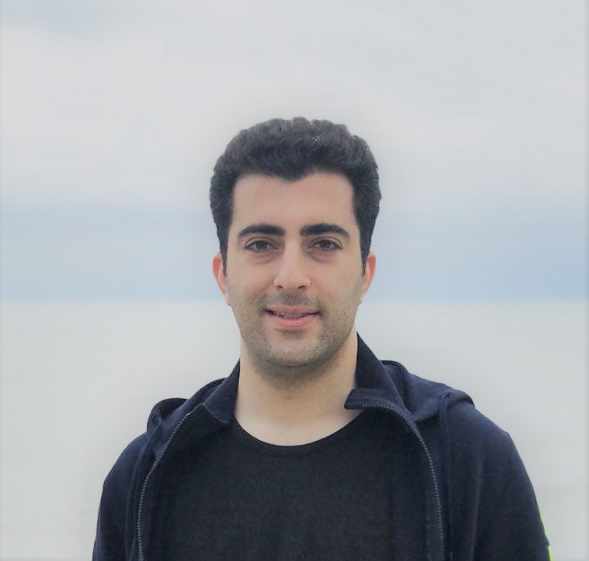

Signal Processing and Machine Learning

I started my bachelor's degree in Telecommunication Engineering. In the middle of my journey, watching a documentary on how engineering solutions are helping people with disabilities and Parkinson's disease, intrigued a great desire in me to undertake research in bio-related problems. Consequently, I started my master’s program in Biomedical Engineering, focusing on medical instrumentation and medical imaging systems.
Researching for about three years in the field of medical instrumentation and computational neuroscience, left me with the idea that a bottleneck for developing solutions for real-world bio-problems is the data analysis phase. This fact motivated me to put the focus of my research on signal processing and machine learning while pursuing my Ph.D. degree.
Enthusiasm for my goals to help other people and commitment to my way has brought me a number of honors, including the first rank of master’s degree students in biomedical engineering, the 6th rank of the nationwide Ph.D. entrance exam in Iran and being invited to the University of Western Ontario as a visiting researcher.
2019 Concordia Accelerator Award ($5,000), Concordia University, Canada
2018 Concordia Merit Scholarship ($10,000), Concordia University, Canada
2018 Selected application for the Deep Learning and Reinforcement Learning summer school, CIFAR and Vector Institute, Toronto, ON, Canada.
2018 Invited visiting researcher to the University of Western Ontario, London, ON, Canada
2018 Concordia Graduate Student Mobility Award ($3,000), Concordia University, Canada
2016 Tuition Award of Excellence for International Students ($36,000), Concordia University, Canada
2016 Rank 6th ( top 1% ) in Nationwide Entrance Exam for PhD, National Organization of Educational Testing (NOET), Iran.
2015 Rank 1st in M.Sc. program of Biomedical Engineering (class of 2013), K. N. Toosi University of Technology, Tehran, Iran.
2012 Iran-Patent (NO:77226), "A Novel Instrument for Sniper Rifle Calibration", Iran.
2012 Iran-Patent (NO:76443), "A New Planar Goniometer for Body Joint Angle Measurement", Iran.
2009 Iran-Patent (NO:49444), "An Automatic and Portable Threading Machine", Iran.
2008 Distinguished paper in International Mathematics Competition, Tournament of Towns, Moscow, Russia.
2008 Rank 1st in IranOpen Robotics Competitions, Junior Demo league, Iran.
2007 Nominated Team from Iran for the RoboCup International Robotics Competitions, Atlanta, USA.
2007 Rank 1st in IranOpen Robotics Competitions, Junior Rescue league, Iran.
The DLSS and RLSS covers both the foundations and applications of deep neural networks, from fundamental concepts to cutting-edge research results.
Canadian Surgical Technologies and Advanced Robotics (CSTAR) and Movement Disorders Centre (MDC) , under the supervision of Professor Rajni V. Patel and Dr. Mandar S. Jog
Projects: Development of AI solutions for diagnosis and discrimination of neurological diseases and development of a real-time signal filtering scheme based on artificial neural networks for hand motion analysis.
Providing consultations on how to deploy machine learning techniques for the products and the devices that are ordered by the constumers.
Under the supervision of Dr. Arash Mohammadi
My project is mainly oriented toward the applications of advanced machine learning techniques (mainly Deep Learning) for Bio-signal processing.
Responsible for the Biomedical Instruments Lab, a course for the senior undergrad students of Biomedical Engineering
The goal of this startup was to design biomedical instruments. For the first step, we focused on designing and production of Biofeedback instrumentations and softwares.
School of Cognitive Sciences. Performing signal Processing for computational neuroscience projects
In this position, I had to teach new employees how to do quality certification tests. We were performing biomedical instruments qualification tests in hospitals, as the official representatives of the ministry of Health.
Under the supervision of Dr. Reza Jafari
Project: "Design and implementation of the processing and controlling circuit board of a blood cell counting machine"
Electrical Engineering (minor in Telecommunications)
Under the supervision of Dr. Jamshid Abouei
Project: "Design and production of a planar goniometer for joint angle measurement"
+1 514 848 2424 ext. 5069
.JPG){kind=link}
.JPG){kind=link}
.JPG){kind=link}
.JPG){kind=link}
.JPG){kind=link}
.JPG){kind=link}
.JPG){kind=link}